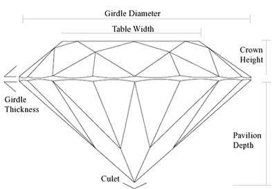

.png)


Since all diamond shapes are very different, unique characteristics determine quality for each shape. A diamond of any shape can be selected based on your preferences and the jewelry design you are interested in. Contact our experts, with years of experience in the diamond industry, to help you choose the perfect solitaire.
The round, brilliant-cut diamond is by far the most popular choice. For almost 100 years, diamond cutters have been using advanced theories of light behavior and precise mathematical calculations to optimize the fire and brilliance in a round diamond and it accounts for more than 75% of all diamonds sold globally. Buy round diamonds at the best prices!
After round diamonds, this is the most preferred shape and is quite popular in India. Its beautiful brilliance and unique cut makes it a favorite for engagement rings. The princess has pointed corners and is traditionally square in shape. The symmetry criteria is quite important here as it will determine the shape of the diamond. For a princess diamond that is square, the ideal length-to-width ratios are between 1 and 1.05. Buy Princess diamonds at the best prices!
This is a step-cut, rectangular shape with outlines on all sides with fewer facets than a brilliant cut. Inclusions and inferior colouring may be more pronounced in this cut. For the classic emerald-cut shape, look for a length-to-width ratio between 1.30 and 1.40. Buy Emerald diamonds at the best prices!
This beautifully unique shape is nearly identical to the emerald-cut, except that it is square. All Asscher-cut diamonds should ideally have a length-to-width ratio between 1.00 and 1.05. Buy Asscher diamonds at the best prices!
Featuring an elongated, curved shape and pointed ends, a marquise diamond can maximize carat weight, giving you a much larger-looking diamond. For the most traditional marquise-cut diamonds, look for length-to-width ratios between 1.75 and 2.25. Buy Marquise diamonds at the best prices!
An oval diamond has beautiful brilliance that's similar to a round diamond. Traditionally popular among women with small hands or short fingers, its elongated shape gives a flattering illusion of length to the hand and finger. Look for length-to-width ratios from 1.35 to 1.65. Buy Oval diamonds at the best prices!
A cuboid-shaped diamond, trimmed corners are the signature of this diamond, and they help make the radiant-cut a popular and versatile choice for jewelry. For a radiant diamond shape that is square, look for length-to-width ratios between 1 and 1.05. If you prefer more of a rectangular shape, look for length-to-width ratios greater than 1.25. Buy Radiant diamonds at the best prices!
This brilliant-cut diamond is also called a teardrop for its single point and rounded end. The unique look of the pear shape helps make it a popular choice for a variety of diamond jewelry, especially earrings and pendants. If you choose an elongated pear shape, the length of the diamond creates a subtle slimming effect on the fingers. Buy Pear diamonds at the best prices!
The heart is the ultimate symbol of love. The unique look of the heart-shaped diamond helps make it a distinctive choice for a variety of diamond jewelry and it is the perfect gift for a romantic occasion. Look for length-to-width ratios of 0.90 to 1.15. Buy Heart-shaped diamonds at the best prices!
This unique shape, with rounded corners, is also known as ‘pillow-cut’ and has been popular for more than a century. For a cushion-cut diamond that is square, look for length-to-width ratios between 1 and 1.05. If you prefer more of a rectangular shape, look for length-to-width ratios greater than 1.25. Buy Cushion diamonds at the best prices!
The weight of diamonds is measured in carats and it denotes the size of a diamond. Diamond prices increase exponentially with the increase in weight. So, a 2-carat diamond of certain quality will be priced at more than twice the price of a 1-carat diamond of the same quality. "Carat” is not to be confused with "karat," which is used to indicate the purity of gold. The size of a diamond, for a specific shape, is directly proportional to the carat-weight of a diamond.
One carat is subdivided into 100 "points". Therefore a diamond measuring 75 points is 3/4 carat in weight, or 0.75ct. 5 carats equal 1 gram, 0.200gm equals 1 carat.
This depends on the preferences and the budget. Differences in size are clearly visible even to the untrained eye, and weight clearly does matter because it influences cost significantly. However, size alone does not guarantee beauty. The quality of a diamond in cut, color and clarity should also be considered. It is possible to buy a larger-sized, lower quality diamond in the same budget as compared to a much smaller-sized, higher quality diamond, depending upon the buyer’s preferences. Once you've selected your cut, color, and clarity grade, it's easy to determine the carat weight of diamond that will fit within your budget. Check this great image to understand how big different diamond sizes will look.
The color evaluation of diamonds is based on the absence of color, so when we speak of color we actually are referring to the degree of colorlessness in a diamond. Many of these color distinctions are so subtle that they are invisible to the untrained eye; however, these distinctions make a very big difference in diamond quality and price. While most diamonds are white, not all are truly colorless, they have color tints. In a white diamond, the presence of a tint is considered undesirable. Diamonds are graded on a Whiteness scale or absence of color scale. Basically, the whiter or clearer the color of a diamond, the greater its value.
The Gemological Institute of America (GIA) has devised a set of guidelines to grade diamond color. Diamond color ranges from D to Z, with D color diamonds being rare, totally colorless and the most expensive. Each letter represents a range of color based on a diamond's tone and saturation.
| Color | Description |
| D | Absolutely colorless. The highest color grade, which is extremely rare. |
| E | Colorless. Very negligible traces of color can be noticed by an expert gemologist. A rare diamond. |
| F | Colorless. Very negligible color traces can be seen by an expert gemologist, but still considered a "colorless" grade. A high-quality diamond. |
| G-H | Near-colorless. Color noticeable when compared to diamonds of better grades, but these grades offer excellent value. |
| I-J-K-L | Color is detectable. An excellent value, especially if the diamond is to be set in yellow-gold jewelry. |
| M-N | Noticeable pale yellow color. |
| O-Z | Noticeable yellow color. |
Fluorescence is an important factor influencing the color of a diamond. Fluorescence can be observed in a diamond when it is exposed to ultraviolet light (such as lighting in nightclubs). Under normal lighting conditions, this fluorescence effect is generally not detectable to the naked eye. Generally, diamonds with a high degree of fluorescence are considered undesirable and are cheaper than diamonds with no fluorescence. However, some people prefer diamonds with fluorescence; it’s a matter of aesthetics really. If the fluorescence intensity is ‘Strong’ or ‘Very Strong’, then the diamond tends to have a milky or oily look and is much cheaper than a diamond with None fluorescence.
For yellow-tinted diamonds, especially in the color ranges J-K-L-M, diamonds with fluorescence seem to have a better color i.e. they appear to be whiter than a similar color diamond with no fluorescence. So, if you are looking to buy a diamond in these color ranges, it might be a good idea to get a diamond with fluorescence intensity of Faint Slight even Medium
Clarity reflects the purity of a diamond or the inclusions and blemishes in a diamond. The inclusions and blemishes impact a diamond’s ability to let in light and reflect its brilliance. Inclusions are interior irregularities and blemishes are exterior irregularities. These imperfections are not flaws, but rather the natural fingerprint of every diamond. Often, we can see these only under a powerful microscope or jeweler’s loupe, and they do not visibly affect the appearance or beauty of a diamond. Large inclusions can affect the appearance of a diamond considerably. Some inclusions are colored too, the most common being “Natts”- a black inclusion, which if considerably big, can be easily spotted by the naked eye. The larger or more numerous the inclusions the less valuable the diamond.
Diamonds with the least and smallest imperfections receive the highest clarity grades. Imperfections located on or beneath the table or centre of the diamond are easier to detect and affect clarity grade more than those located around the sides of the diamond. Internationally, diamonds are graded by labs according to the following grades:
Diamonds with the least amount of flaws hold the highest clarity grading. Depending upon one’s budget and preferences, the clarity grade should be chosen. If you want completely clean diamonds, then you can go for VVS1/VVS2. If you want a diamond which is visibly clean to the unaided eye, you can consider VS1 or VS2. If you want a larger-sized diamonds or a better color within your budget, you may select SI1 or SI2. An "eye-clean" diamond - one that has no imperfections visible to the unaided eye – is an excellent value. SI1 and VS2 diamonds are typically considered clarity grades of great value since their inclusions are minor and invisible to the unaided eye. As diamond size increases, it becomes easier to see the inclusions even with the unaided eye. So consider this while making your choice. It will be much easier to spot the inclusions in a 2.00Ct SI2 as compared to a 0.30Ct SI2.
Cut is an important factor determining the beauty of a diamond. It is the only ‘C’ that is influenced by man. Cut includes the proportions, polish and symmetry and these influence the brilliance, fire and scintillation of a diamond. It is important for a diamond to have well-cut angles and finish for it to shine and sparkle. A poorly cut diamond can appear to be dark, dull and lifeless. It has the greatest overall influence on a diamond's beauty.
According to GIA standards, a round diamond is graded on it’s Cut, Polish and Symmetry features separately. For fancy shapes, the Symmetry and Polish Features are graded, Cut is not graded.
Ideal/ Excellent – Excellent light performance. Reflects almost all of the light that enters. The best and the most beautiful cut.
Very Good – Very good light performance. Reflects majority of the light that enters. Very Good cut diamonds are considered to be a good value as they are cheaper than Excellent cut.
Good – Good light performance. Reflects most of the light that enters. Good diamond cuts are much cheaper than Good cuts.
Fair – Still a quality diamond, but a fair cut will not be as brilliant as a good cut or above.
Poor – Poor cut diamonds are typically cut too shallow or too deep causing much of the light to leak out of the diamond's sides and base. Sarvada Jewels does not carry diamonds having Poor cut.
Cut grade is the most important factor in determining the overall appearance of a diamond, because a poorly cut diamond will seem dull even with excellent clarity and color. Conversely, a well cut diamond can have a slightly lower color (G-H) or clarity (SI1-SI2) and still look quite beautiful, due to its superior ability to create sparkle and brilliance.
For superior brilliance, choose a diamond with a Cut grade of Very Good or Excellent for round diamonds, with Polish and Symmetry grades of at least Good, preferable Very Good. For Fancy shapes, our experts recommend not selecting diamonds with Polish and Symmetry grades of lower than Good. For the best cut, buy a Triple Excellent diamond, Cut-Excellent, Polish-Excellent and Symmetry-Excellent. For those on a budget, primarily concerned with size, a diamond of Good or Fair cut may be an acceptable choice. While the diamond will lack the scintillation and brilliance of a well-cut diamond, it will allow a significant increase in size for the same price.
It is easy to be misled on cut quality, especially for diamonds that are not certified. Sometimes, customers are shown two-three qualities of diamonds but even the best quality might not represent the best cut available. Also, another major mistake is buying deeply-cut diamonds. A deeply cut diamond carries more of its carat weight "hidden" in the depth of the diamond as opposed to the width. These poorly cut diamonds are less expensive per carat, and are common in most jewelry stores. A customer might purchase a 1.00 carat diamond that actually looks like a .90 carat diamond because it is too deeply cut. Our experts recommend buying diamonds certified by reputed labs like GIA, IGI, HRD and AGS.
Brilliance refers to the brightness of a diamond, created by the combination of all the white light reflections from the surface and the inside of a polished diamond. When light hits a diamond's surface, some light enters and some is reflected back.
The cut of a diamond also creates “contrast”, the light and dark areas seen in a diamond. These dark areas are not inclusions, but shadows created by the cut or by objects between the light source and the diamond (such as the observer's head).
The greater the amount of reflected light and the stronger the contrasts, the more brilliant the stone. A round diamond will typically exhibit more brilliance than a fancy shape due to the superior mechanics of the round cut for reflecting light.
Scintillation refers to the flashes of light, or sparkles, which are produced when a diamond is tilted from side to side. These flashes are caused when light that isn't immediately reflected back enters the diamond and bounces off the internal walls. They are most pronounced in flood lit areas where strong light enters the diamond from multiple angles.
The light that reflects out of a diamond can appear in brilliant white flashes, or in a rainbow of color, referred to as Fire. The fire effect is caused by the proper bending and dispersion of light as it travels through the diamond. The more colorless the diamond, the truer the dispersed colours will appear. This effect is greater in darker areas where there are fewer light sources.
Diameter: The diameter is the width of a polished diamond from one side of the girdle to another.
Table: The table is the largest polished facet of the diamond , face-up in the centre of the diamond.
Crown: The crown is the top part of the diamond that is measured from the surface of the table to the girdle
Girdle: The girdle is the widest edge of the diamond where the crown ends and meets the pavilion
Pavilion: The pavilion is the bottom part of the diamond that begins at the girdle and extends downward to the point of the culet
Culet: The culet is the tiny flat facet at the bottom tip of the diamond
Depth: The depth of a diamond refers to the total length of a diamond, measured from the culet to the table

Diamond proportion refers to the relationship between the size, shape, and angle of each facet of a diamond. A wide range of combinations are possible, ultimately determining the diamond's interaction with light.To optimally capture light and reflect it back, a diamond's pavilion must have accurate angles and depth. If the angle of the pavilion is too shallow or too deep, light will escape or leak out, creating dark and dull "stains". The crown angle is also extremely important since this affects the way that light enters and exits the diamond. Not only are the angles important, but depth percentage and table percentage are also key factors that contribute to the quality of a diamond's cut. Depth percentage refers to the depth of the diamond divided by its diameter. Shallower diamonds have low depth percentages whereas deeper diamonds have higher depth percentages.
A diamond's facets must be symmetrical in order to maximize the amount of light that enters and exits the stone. Diamonds with poor symmetry look slightly distorted, unbalanced and improperly shaped. Moreover, they will affect brilliance, scintillation and fire. Many asymmetrical round stones are not completely round, or have misshapen facets or off-centre culets.
Once a diamond is cut, each facet of the diamond is polished. If the polishing is done improperly, it can leave scratches and streaks that are similar to the marks left behind after a car waxing. An Excellent diamond polish is a diamond which has very few or no scratches.
A diamond is evaluated and graded on the 4Cs- Color, Clarity, Cut and Carat. Independent labs such as GIA, IGI, HRD, GSI and AGS undertake diamond grading. Sarvada Jewels sells only certified solitaires by GIA, IGI, HRD and diamond jewellery graded by IGI. While plenty of other independent labs exist, some are a bit lax in their assessments of diamond quality and do not command the same respect for consistency and quality of grading.
It is important to note that each diamond is unique and as such it is difficult to classify a diamond into set categories. So, even though ‘SI1’ clarity seems to be quite specific, in reality it is a range from the best SI1 to the worst SI1. The same holds true for ‘Color’ too. Also, the grading is done by humans, albeit according to set categories and guidelines, but there might be slight differences in the opinions of two gemologists. As a result, we find that the grading standards of different gem labs differ slightly, which causes a difference in prices of solitaires with the same grading results but from two different labs. Experts at Sarvada Jewels are certified gemologists and have years of experience in the diamond industry. We ensure that each solitaire is graded by our experts and the results verified with the lab grading report.
A certified diamond comes with a diamond grading report guaranteed by an accredited gem lab. This report assures the customer that the diamond is independently recognized as possessing all the qualities specified by that report. When you buy a certified diamond, you are getting a diamond with beauty and pedigree. You have tangible, legal assurances as to the particular nature and quality of the diamond you are purchasing.
An uncertified diamond is not accompanied by a diamond grading report, and therefore its stated quality is based only on the word of the seller. It is not necessarily a bad diamond; certainly, it can be as beautiful as its certified counterpart. However, if you cannot judge it’s quality yourself, you have to rely on someone else to assure you of its quality